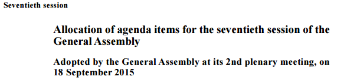
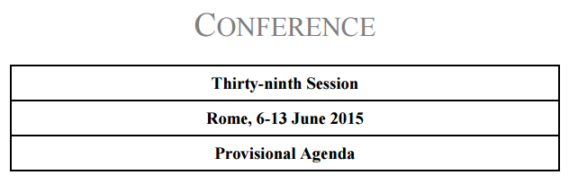
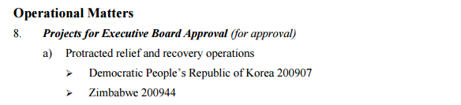
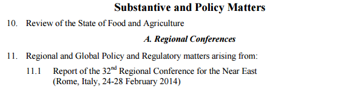
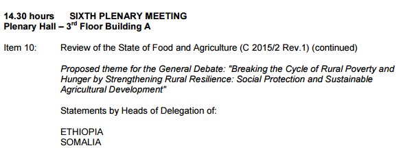
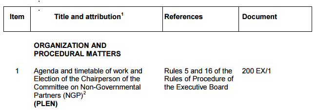
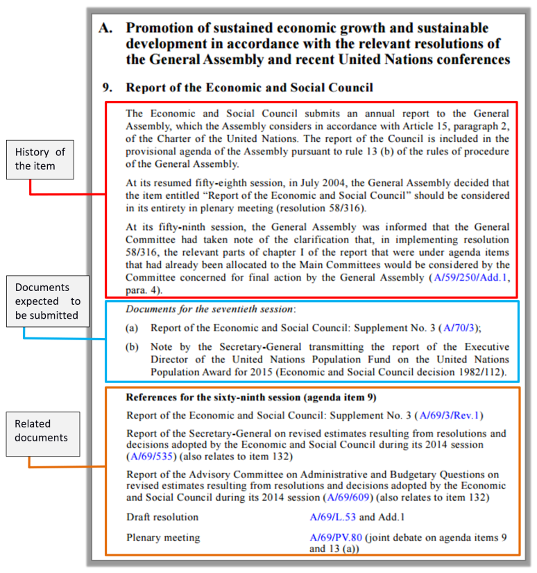
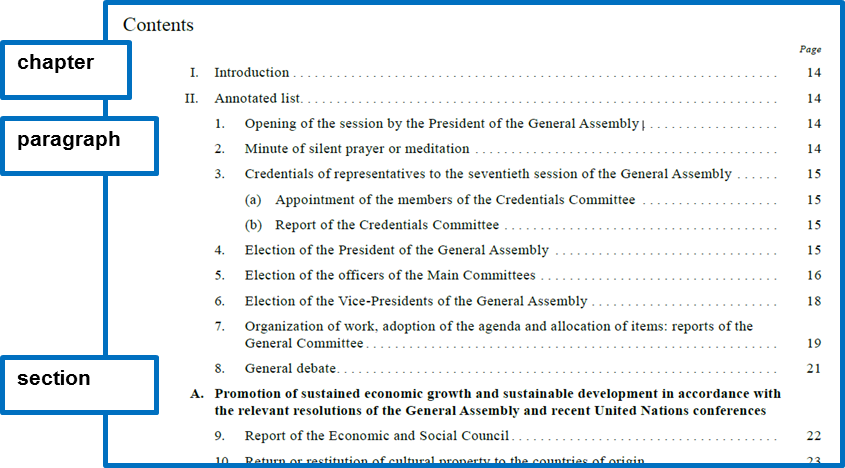

Document Class: Meeting Agenda
UN document class | Meeting Agenda | |||
subclass | Agenda Listing Description: documents listing agenda items to be considered at a specific meeting/s or session/s. They may report time, location, etc. Annotated Agenda Description: agenda with a brief description of agenda items, citation of related documents as well as information and other announcements. | |||
AKN4UN | AKN | AKN4UN | UN Document | AKN4UN |
documentType | subtype | sub-class | @name subclass mandatory | |
value is prescribed | value is suggested | |||
meeting agenda | <debateReport> | agenda | agenda listing | agendaListing |
annotated agenda | agendaAnnotated | |||
function | It is a list of all items to be considered during a meeting or a session normally grouped by main subjects. Usually to each agenda item is assigned a number. All documents issued during a meeting or session are usually assigned to an agenda item. In the meetings records and reports agenda items are usually referred at the point of the discussion of the item. Function documents listing agenda items of a meeting or a series of meetings, at times with brief description of agenda items, citation of related documents, and other announcements, such as consultations, informal meetings or side events, as well as summaries of the previous day's meetings. Structure structures vary widely across organizations and traditions. | |||
authors | Secretariats/Divisions/Departments of UN organizations | |||
editors | Secretariats/Divisions/Departments of UN organizations | |||
Caveat. What follows is the modelling and description of the "Meeting Agenda Document Class" (logical meeting records) that is not specific to the meeting agenda of any organization in particular. It does list all the possible characteristics that meeting agenda may have across all the UN organizations, since the objective is to cover all the variances that may exist. The description and modelling of the publications in which a meeting agenda may be published is presented in the "Publication Document Class".
The Meeting Agenda Document Class will have to be localised by the different organizations, based on their specific editorial and style traditions, by selecting only the elements that are required to model all the relevant structural and semantic parts of a specific typology of meeting agenda.
Please note that the XML examples provided in the next sections should not be considered complete. Examples show only the essential structural elements of the mark-up and only the ones relevant in a specific context without any semantic or presentation markup in order to keep the XML "humanly’" readable.
Document Structure
Description
The structure of an agenda may have the following elements:
Identification part Body, authority, meeting name, session, date, etc. | Always present. |
Main Content Agenda item, number, title, date, time and other relevant information. | Always present. |
Annexes e.g timetable. | Not always present. |
Modelling
document type | <akomaNtoso> <debateReport name="{akn4un:subclass}"> |
metadata | <meta> <identification source="#{manifestationAuthor80}"> </identification> </meta> |
identification part | <preface> (...) </preface> |
body block | <mainBody> (...) </mainBody> |
</debateReport> </akomaNtoso> |
Examples
Agenda:
document type | <akomaNtoso> <debateReport name="orderOfDay"> | |
identification part81 | <preface> ……… </preface> | |
body | <mainBody> ……… </mainBody> | |
</debateReport> </akomaNtoso> | ||
An agenda usually may go through an evolution from a simple list of agenda items that progressively gets enriched by more information, like days and time, related documents, annotation, summaries, etc. Below we have an example of what type of forma an agenda may take:
Preliminary list: earliest form of agenda, it may include an indication of the legislative authority for the inclusion of each item. Example: A/70/50 and annotated preliminary list: A/70/100
Provisional Agenda: in addition to the items on the "Preliminary Agenda", items requested prior to its issuance by organs or Members, or which are deemed necessary by the responsible authorities. Example: A/70/150
Draft Agenda: comprising items on the provisional agenda, the supplementary list and any additional items proposed by that date. It is communicated to responsible authorities at the start of a meeting or session. Annotated agenda: list of items to be discussed during a session with a brief rationale and introduction of each item, the actions that might have been taken at the previous session and the action that may be taken, together with a list of documents issued at the previous session, and a list of documents expected for the current session.
Adopted Agenda: the approved list of agenda items to be considered during a meeting or session. Addenda may be issued to the report of the General Committee and the agenda when additional items are included during the session. A/70/251
Allocation of Agenda Items: allocation of agenda items to the relevant bodies, the same items may appear under different bodies. Addenda may be issued as required. Example: A/70/252
Order of Business: A list of items scheduled to be considered at a specific meeting.
Journal: a complete picture of information about meetings and events on any given day – what meetings are being held, when and where, what topics are being discussed, what documents are the basis of those discussions, a summary of the meetings of the previous day and may include listing of relevant Web sites as well as consultations, informal meetings, side events, and other announcements may also be listed. Example: No. 2016/210
Identification part: <preface>
The identification part <preface> </preface> is meant to include any matter found from the very beginning of a document up to where the <mainBody> begins. All Agendas start with some or all the information listed below, not necessarily in the same order:
body - authority
meeting name
meeting date
meeting place
meeting time
session date
session or meeting number
document type
Modelling <preface>
For information about element specific usage, see 1.2 <preface>.
Examples
 | |
modelling | <preface> <p> <session refersTo="#session" value="70"> Seventieth Session</session> <docTitle> Allocation of agenda items for the seventieth session of the <docAuthority refersTo="#generalAssembly">General Assembly </docAuthority> </docTitle> <inline name="subTitle"> Adopted by the General Assembly at its <event refersTo="#plenaryMeeting"> <inline name="meetingName" refersTo="#plenaryMeeting"> 2nd plenary meeting</inline>, on < date="2015-09-18">18 September 2015</> </event> </inline> </p> </preface> |
 | |
modelling | <preface> <p> <docAuthority refersTo="#conference"> CONFERENCE</docAuthority> <session refersTo="#session" value="39"> Thirty-ninth Session</session> <event refersTo="#meeting"> <location refersTo="#rome">Rome</location>, <docDate date="2015-06-06" refersTo="#startDate"> 6</docDate>- <docDate date="2015-06-13" refersTo="#endDate">13 June 2015</docDate> </event> <docType>Provisional Agenda </docType> </p> <preface> |
modelling | <preface> <p> <docType>Order of the Day</docType> Monday, <docDate date="2016-06-13">13 June 2016</docDate> <location refersTo="#executiveBoardRoom">Executive Board Room</location> </p> </preface> |
Main Content: <mainBody>
The agenda body <mainBody> </mainBody> is meant to include any matter found after the <preface> up to where the <conclusion> or <attachments> or the end of the document. It contains one or more paragraphs detailing the agenda of the organ or the action to be taken.
The main content is organized as follows:
agenda item: with number (Arabic numerals) and title
sub-agenda item: with letters (lower case letter between parentheses) and title
type of item (e.g. for information, for decision, etc.)
location (town and country)
day or days interval
time or time interval
debate theme
headings: agenda items are items are grouped in sections and sub-sections. Heading may be identified with capital letter
Please note that:
The same footnote number or symbol may be used by several agenda items.
Paragraphs may be numbered at least in some parts.
Agenda Item number may change during the lifecycle of Agenda.
The numbering of the document may change during an evolutionary stage into another document.
Annotated agenda/lists may be structured82 in:
History/background: where for each item of the proposed agenda/agenda all the actions that might have been taken are listed and background rationale may be provided.
Documentation: documents expected to be submitted under the agenda item.
Related documents: list relevant related documents.
<mainBody>
The <mainBody> element may contains all types of AKN groups of elements. In the context of Document Class Meeting Agenda, only hierarchical and block containers elements are allowed. See the table below:
AKN4UN | AKN | body element | Supported elements |
Meeting Agenda | <debateReport> | <mainBody> | Element group: hierElements alinea, article, book, chapter, clause, division, hcontainer, indent, level, list, paragraph, part, point, proviso, rule, section, subchapter, subclause, subdivision, sublist, subparagraph, subpart, subrule, subsection, subtitle, title, tome, transitional |
Element group: blockElements block, blockContainer, blockList, foreign, ol, p, table, tblock, toc, ul | |||
Element group: containerElements address, adjournment, administrationOfOath, communication, container, debateSection, declarationOfVote, div, ministerialStatements, nationalInterest, noticesOfMotion, oralStatements, papers, personalStatements, petitions, pointOfOrder, prayers, proceduralMotions, questions, resolutions, rollCall, writtenStatements |
For the content model used by hierarchical and block containers, please see relevant sections of the AKN4UN Guidelines.
Examples
 | |
modelling | <chapter> <heading>Operational Matters</heading> <paragraph eId="para_8"> <num>8.</num> <list eId="para_8__list_1"> <intro> <p>Projects for Executive Board Approval (for approval)</p> </intro> <point eId="para_8__list_1__point_a"> <num>a)</num> <list eId="para_8__list_1__point_a__list_1"> <intro> <p> Protracted relief and recovery operations</p> </intro> <point eId="para_8__list_1__point_a__list_1__point_1"> <content> <p> Democratic People’s Republic of Korea 200907</p> </content> </point> <point eId="para_8__list_1__point_a__list_1__point_2"> <content> <p>Zimbabwe 200944</p> </content> </point> </list> </point> </list> </paragraph> </chapter> |
notes | |
 | |
modelling | <chapter eId="chp_3"> <heading>Substantive and Policy Matters</heading> <paragraph eId="chp_3__para_10"> <num>10.</num> <heading>Review of the State of Food and Agriculture</heading> </paragraph> <division eId="chp_3__div_A"> <num>A. </num> <heading>Regional Conferences</heading> <paragraph> <num>11.</num> <list eId="chp_3__div_A__para_11__list_1"> <intro> <p> Regional and Global Policy and Regulatory matters arising from:</p> </intro> <point eId="chp_3__div_A__para_11__list_1__point_1-1"> <num>11.1</num> <content> <p>Report of the 32nd Regional Conference for the Near East (Rome, Italy, 24-28 February 2014)</p> </content> </point> </list> </paragraph> </division> </chapter> |
notes | |
modelling | <preface> <p> <docTitle refersTo="#mainTitle">Main Committees</docTitle> <docCommittee>Fifth Committee</docCommittee> <docTitle refersTo="#subTitle">First part of the resumed session</docTitle> </p> </preface> <mainBody> <debateSection name="section"> <block name="openingStatement"> <recordedTime time="2015-10-11T10:00:00" refersTo="#startTime"> 10:00</recordedTime> <event refersTo="#meeting24"> 24th meeting [ <a href="http://{actual_URL}/video.mp4">webcast</a>] <location refersTo="#conferenceRoom3">Conference Room 3</location> </event> </block> <blockList eId="list_1"> <item eId="list_1__item_1"> <num>1.</num> <heading>Organization of work (A/C.5/71/L.22)</heading> <p>General discussion</p> </item> <item eId="list_1__item_2"> <num>2.</num> <blockList eId="list_1__item_2__list_1"> <listIntroduction>Appointments to fill vacancies in subsidiary organs and other appointments [item 115]</listIntroduction> <item eId="list_1__item_2__list_1__item_a"> <num>(a)</num> <p>Appointment of members of the Advisory Committee on Administrative and Budgetary Questions (A/71/101/Rev.1/Add.1)</p> </item> </blockList> </item> </blockList> </debateSection> </mainBody> |
notes | |
source83 |  |
modelling | <debateSection name="section"> <block name="openingSection"> <recordedTime time="2015-06-09T14:30:00" refersTo="#startTime"> 14.30 hours </recordedTime> <event refersTo="#sixthMeeting"> <inline refersTo="meetingNumber">SIXTH</inline> PLENARY MEETING <location refersTo="#plenaryHall">Plenary Hall – 3rd Floor Building A</location> </event> </block> <blockList eId="list_19"> <item eId="list_19__item_10"> <num>Item 10</num> <heading>: Review of the State of Food and Agriculture (C 2015/2 Rev.1) (continued)</heading> <p> Proposed theme for the General Debate: "Breaking the Cycle of Rural Poverty and Hunger by Strengthening Rural Resilience: Social Protection and SustainableAgricultural Development"</p> <blockList> <listIntroduction>Statements by Heads of Delegation of:</listIntroduction> <item> <p>ETHIOPIA</p> </item> <item> <p>SOMALIA</p> </item> </blockList> </item> </blockList> </debateSection> |
notes | |
 | |
modelling | <blockContainer> <table> <tr> <th> <p>Item </p> </th> <th> <p>Title and attribution</p> </th> <th> <p> References</p> </th> <th> <p>Document </p> </th> </tr> <tr> <td> <p>1</p> </td> <td> <tblock> <heading>ORGANIZATION AND PROCEDURAL MATTERS</heading> <blockList> <item eId="item_1"> <p>Agenda and timetable of work and Election of the Chairperson of the Committee on Non-Governmental Partners (NGP) (PLEN)</p> </item> </blockList> </tblock> </td> <td> <p>Rules 5 and 16 of the Rules of Procedure of the Executive Board</p> </td> <td> <p>200 EX/1</p> </td> </tr> <tr> <td> <p>2</p> </td> <td><blockList> <item eId="item_2"><p>Approval of the summary records of the 199th session (PLEN)</p></item></blockList> </td> <td> <p>Rule 23, para. 3 of the Rules of Procedure of the Executive Board</p> </td> <td> <p>199EX/SR. 1-7</p> </td> </tr> </table> </blockContainer> |
notes | |
 | |
modelling | <section eId="sec_A"> <num>A.</num> <heading>Promotion of sustained economic growth and sustainable development in accordance with the relevant resolutions of the General Assembly and recent United Nations conferences</heading> <paragraph eId="sec_A__para_9"> <num>9.</num> <heading>Report of the Economic and Social Council</heading> <crossHeading eId="sec_A__para_9__crossHeading_1" refersTo="#preamble"> The Economic and Social Council submits an annual report to the General Assembly, which the Assembly considers in accordance with Article 15, paragraph 2, of the Charter of the United Nations. The report of the Council is included in the provisional agenda of the Assembly pursuant to rule 13 (b) of the rules of procedure of the General Assembly. </crossHeading> <crossHeading eId="sec_A__para_9__crossHeading_2" refersTo="#preamble"> At its resumed fifty-eighth session, in July 2004, the General Assembly decided that the item entitled "Report of the Economic and Social Council" should be considered in its entirety in plenary meeting (resolution 58/316). </crossHeading> <crossHeading eId="sec_A__para_9__crossHeading_3" refersTo="#preamble"> At its fifty-ninth session, the General Assembly was informed that the General Committee had taken note of the clarification that, in implementing resolution 58/316, the relevant parts of chapter I of the report that were under agenda items that had already been allocated to the Main Committees would be considered by the Committee concerned for final action by the General Assembly (A/59/250/Add.1, para. 4). </crossHeading> <clause eId="sec_A__para_9__clause_2" refersTo="#citations"> <list eId="sec_A__para_9__clause_2__list_1"> <intro> <p>Documents for the seventieth session: </p> </intro> <point> <num>(a)</num> <content> <p> <ref href="" refersTo="#citation"> Report of the Economic and Social Council: Supplement No. 3 (A/70/3); </ref> </p> </content> </point> <point> <num>(b)</num> <content> <p>Note by the Secretary-General transmitting the report of the Executive Director of the United Nations Population Fund on the United Nations Population Award for 2015 (Economic and Social Council decision 1982/112).</p> </content> </point> </list> </clause> <clause eId="sec_A__para_9__clause_3" refersTo="#submission"> <heading>References for the sixty-ninth session (agenda item 9)</heading> <content> <p> <ref href=""> Report of the Economic and Social Council: Supplement No. 3 (A/69/3/Rev.1) </ref> </p> <p> <ref href=""> Report of the Secretary-General on revised estimates resulting from resolutions and decisions adopted by the Economic and Social Council during its 2014 session (A/69/535) (also relates to item 132) </ref> </p> <p> <ref href=""> Report of the Advisory Committee on Administrative and Budgetary Questions on revised estimates resulting from resolutions and decisions adopted by the Economic and Social Council during its 2014 session (A/69/609) (also relates to item 132)</ref> </p> <p> <ref href=""> Draft resolution <span class="tabular">A/69/L.53 and Add.1</span> </ref> </p> <p> <ref href=""> Plenary meeting <span class="tabular">A/69/PV.80 (joint debate on agenda items 9 and 13 (a))</span> </ref> </p> </content> </clause> </paragraph> </section> """""""""""""""""""""""" |
notes |  |
Annexes/Attachments
The annexes block <attachments> </attachments> is meant to include all annexes/attachments e.g. timetable, etc.
Modelling <attachments>
For information about element specific usage, see section 1.7 <attachments>.
Examples
source84 | |
modelling | <docNumber>200 EX/1</docNumber> <docType>Annex</docType> <session refersTo="#exeutiveBoardSession" value="200">200th session of the Executive Board</session> <docTitle>Timetable of work </docTitle> |
80 The author of the markup, the person/organization who take the responsibility for information provided in the different <meta>.